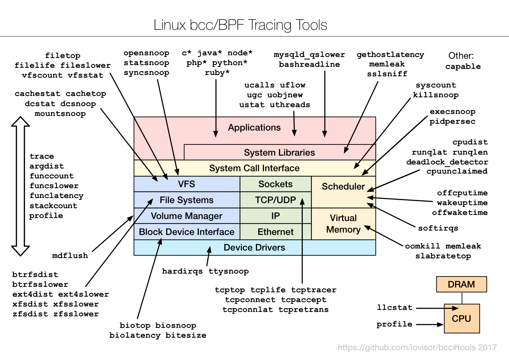

BCC 是基于 BPF 的 Linux IO 分析、监控、网络工具集合。BPF Compiler Collection (BCC) 是创建高效内核追踪和处理程序的工具包，包含几个有用的工具和用例。BCC 扩展了 BPF (Berkeley Packet Filters) 的用途，BPF 之前被称为 eBPF，是 Linux 3.15 新增的一个新特性。BCC 大部分的功能都要求 Linux 4.1+。
本文翻译自性能分析大牛Brendan Gregg的 2017年中旬的一篇文章: Golang bcc/BPF Function Tracing, 介绍如何使用最新的工具更加深入的分析Go程序。

本文中我将逐步展示一个新的分析Go程序的方式： 使用Linux 4.x的 eBPF 技术进行动态分析。如果你搜索一下go和BPF关键字， 你会发现一些使用 BPF的Go程序库(比如 gobpf)。这并不是我想在本文中介绍的：我是要使用 BPF 来对Go程序进行性能分析和调试。 如果你还不了解 BPF, 我几周前在 linux.conf.au 有一些介绍 (youtube, slideshare)。
现在已经有一些方式可以调试和跟踪(debug and trace)Go程序, 包括(但不限于下列方式):
BPF tracing技术可以做更多的工作，当然它也有自己的优缺点，下面我会用一个简单的hello.go程序来演示这些：
hello.go1 2 3 4 5 6 7
| package main import "fmt" func main() { fmt.Println("Hello, BPF!") }
|
我会用gccgo先编译，然后再用 go 自己的编译器来编译 (如果你不知道它们之间的区别，请看 VonC 做的这个 总结。 一句话, gccgo可以产生更加优化的二进制文件，但适用于更老版本的go)。
函数统计 (gccgo)
编译:
1 2 3
| $ gccgo -o hello hello.go $ ./hello Hello, BPF!
|
现在可以使用 bcc tool funccount 动态跟踪和统计所有的以fmt.开头的Go库函数，我同时会在另外一个终端中运行这个hello程序：
1 2 3 4 5 6 7 8 9 10 11 12 13 14 15 16 17 18 19 20 21
| Tracing 160 functions for "go:fmt.*"... Hit Ctrl-C to end. ^C FUNC COUNT fmt..import 1 fmt.padString.pN7_fmt.fmt 1 fmt.fmt_s.pN7_fmt.fmt 1 fmt.WriteString.pN10_fmt.buffer 1 fmt.free.pN6_fmt.pp 1 fmt.fmtString.pN6_fmt.pp 1 fmt.doPrint.pN6_fmt.pp 1 fmt.init.pN7_fmt.fmt 1 fmt.printArg.pN6_fmt.pp 1 fmt.WriteByte.pN10_fmt.buffer 1 fmt.Println 1 fmt.truncate.pN7_fmt.fmt 1 fmt.Fprintln 1 fmt.$nested1 1 fmt.newPrinter 1 fmt.clearflags.pN7_fmt.fmt 2 Detaching...
|
漂亮! 输出结果中包含了fmt.Println(), 还有一些其它的调用。
实际并不需要以特定的方式运行Go程序， 你可以跟踪一个已经运行的Go程序进程，并不需要重新启动它， 怎么做呢？
- 使用 Linux uprobes: User-Level Dynamic Tracing, Linux 3.5中增加的一个功能。 它使用一个软中断重写了kernel的指令，并且当跟踪程序结束的时候会恢复进程。
- gccgo编译的程序有一个标准的符号表，可以用来查询函数。
- 本例中使用了
libgo, 它包含fmt包。
- uprobes可以附加到已经运行的进程上， 或者像我上面做的那样， 捕获所有使用它的进程。
- 更有效地， 我经常统计内核上下文的函数调用次数， 只将调用次数发送到用户空间。
对于操作系统来讲， 这个二进制文件的信息如下：
1 2 3 4 5 6 7 8 9 10 11 12 13 14 15 16 17
| $ file hello hello: ELF 64-bit LSB executable, x86-64, version 1 (SYSV), dynamically linked, interpreter /lib64/ld-linux-x86-64.so.2, for GNU/Linux 2.6.32, BuildID[sha1]=4dc45f1eb023f44ddb32c15bbe0fb4f933e61815, not stripped $ ls -lh hello -rwxr-xr-x 1 bgregg root 29K Jan 12 21:18 hello $ ldd hello linux-vdso.so.1 => (0x00007ffc4cb1a000) libgo.so.9 => /usr/lib/x86_64-linux-gnu/libgo.so.9 (0x00007f25f2407000) libgcc_s.so.1 => /lib/x86_64-linux-gnu/libgcc_s.so.1 (0x00007f25f21f1000) libc.so.6 => /lib/x86_64-linux-gnu/libc.so.6 (0x00007f25f1e27000) /lib64/ld-linux-x86-64.so.2 (0x0000560b44960000) libpthread.so.0 => /lib/x86_64-linux-gnu/libpthread.so.0 (0x00007f25f1c0a000) libm.so.6 => /lib/x86_64-linux-gnu/libm.so.6 (0x00007f25f1901000) $ objdump -tT /usr/lib/x86_64-linux-gnu/libgo.so.9 | grep fmt.Println 0000000001221070 g O .data.rel.ro 0000000000000008 fmt.Println$descriptor 0000000000978090 g F .text 0000000000000075 fmt.Println 0000000001221070 g DO .data.rel.ro 0000000000000008 Base fmt.Println$descriptor 0000000000978090 g DF .text 0000000000000075 Base fmt.Println
|
看起来像编译的 C 程序， 你可以使用很多已有的调试器和跟踪器， 包括 bcc/BPF。 而且比那么即时编译的运行时比如 Java 和 Node.js更容易操作。目前唯一一点不爽的就是函数名包含一些非标准的字符， 比如本例中的"." 。
funccount 支持一些参数， 比如-p指定某个进程ID, -i指定输出的时间间隔。它当前只能同时支持最多1000个跟踪对象(probe), 对于fmt.*来说，函数不多还OK, 但是如果跟踪所有的libgo中的函数就有问题了:
1 2
| maximum of 1000 probes allowed, attempted 21178
|
嗯哼， 不工作了。 就像 bcc/BPF 中其它一些问题一样， 如果这个限制在应用中阻碍太多的话我们考虑寻找一个方式来解决它。
函数统计 (Go gc)
使用 Go gc编译器来编译:
1 2 3
| $ go build hello.go $ ./hello Hello, BPF!
|
统计 fmt 的函数调用:
1 2 3 4 5 6 7 8 9 10 11 12 13 14 15 16 17 18
| Tracing 78 functions for "/home/bgregg/hello:fmt.*"... Hit Ctrl-C to end. ^C FUNC COUNT fmt.init.1 1 fmt.(*fmt).padString 1 fmt.(*fmt).truncate 1 fmt.(*fmt).fmt_s 1 fmt.newPrinter 1 fmt.(*pp).free 1 fmt.Fprintln 1 fmt.Println 1 fmt.(*pp).fmtString 1 fmt.(*pp).printArg 1 fmt.(*pp).doPrint 1 fmt.glob.func1 1 fmt.init 1 Detaching...
|
你仍然可以跟踪fmt.Println(), 但是现在是从二进制程序中找到它， 而不是在libgo中， 这是因为：
1 2 3 4 5 6 7 8
| $ file hello hello: ELF 64-bit LSB executable, x86-64, version 1 (SYSV), statically linked, not stripped $ ls -lh hello -rwxr-xr-x 1 bgregg root 2.2M Jan 12 05:16 hello $ ldd hello not a dynamic executable $ objdump -t hello | grep fmt.Println 000000000045a680 g F .text 00000000000000e0 fmt.Println
|
它包含一个 2M的静态库， 这个库中包含fmt的函数。
另外一个不同就是函数名中包含不常见的符号: "*", "("等等。
函数跟踪 (gccgo)
这次我将尝试 Sasha Goldshtein 的跟踪工具， 也是 bcc跟踪工具集中一个。我会使用它来观察函数的每次调用。
还是先使用gccgo来编译， 这次的简单小程序叫做 functions.go:
functions.go1 2 3 4 5 6 7 8 9 10 11
| package main import "fmt" func add(x int, y int) int { return x + y } func main() { fmt.Println(add(42, 13)) }
|
开始跟踪 add() 函数:
1 2 3
| # trace '/home/bgregg/functions:main.add' PID TID COMM FUNC 14424 14424 functions main.add
|
还可以查看它的传入的参数:
1 2 3
| # trace '/home/bgregg/functions:main.add "%d %d" arg1, arg2' PID TID COMM FUNC - 14390 14390 functions main.add 42 13
|
酷，工作正常，参数显示正确。
trace 还有其它的参数(使用 -h 查看), b比如时间戳、堆栈信息等。
函数跟踪 (Go gc)
目前位置一切按照预想的执行。 同样的程序， 使用 go gc编译器来编译:
1 2 3 4 5 6 7
| $ go build functions.go # trace '/home/bgregg/functions:main.add "%d %d" arg1, arg2' could not determine address of symbol main.add $ objdump -t functions | grep main.add $
|
什么？没有main.add()函数？ 难道它被内联了？禁止内联：
1 2 3
| $ go build -gcflags '-l' functions.go $ objdump -t functions | grep main.add 0000000000401000 g F .text 0000000000000020 main.add
|
现在好了，虚惊一场。 跟踪这个程序和它的参数：
1 2 3
| # trace '/home/bgregg/functions:main.add "%d %d" arg1, arg2' PID TID COMM FUNC - 16061 16061 functions main.add 536912504 16
|
有点不对， 参数应该是 42 和 13,并不是536912504 和 16。
超期gdb调试:
1 2 3 4 5 6 7 8 9 10 11 12 13 14 15 16 17 18 19 20 21 22 23 24 25 26 27 28 29 30 31 32 33 34 35 36 37 38 39 40 41
| $ gdb ./functions [...] warning: File "/usr/share/go-1.6/src/runtime/runtime-gdb.py" auto-loading has been declined by your `auto-load safe-path' set to "$debugdir:$datadir/auto-load". [...] (gdb) b main.add Breakpoint 1 at 0x401000: file /home/bgregg/functions.go, line 6. (gdb) r Starting program: /home/bgregg/functions [New LWP 16082] [New LWP 16083] [New LWP 16084] Thread 1 "functions" hit Breakpoint 1, main.add (x=42, y=13, ~r2=4300314240) at /home/bgregg/functions.go:6 6 return x + y (gdb) i r rax 0xc820000180 859530330496 rbx 0x584ea0 5787296 rcx 0xc820000180 859530330496 rdx 0xc82005a048 859530698824 rsi 0x10 16 rdi 0xc82000a2a0 859530371744 rbp 0x0 0x0 rsp 0xc82003fed0 0xc82003fed0 r8 0x41 65 r9 0x41 65 r10 0x4d8ba0 5082016 r11 0x0 0 r12 0x10 16 r13 0x52a3c4 5415876 r14 0xa 10 r15 0x8 8 rip 0x401000 0x401000 eflags 0x206 [ PF IF ] cs 0xe033 57395 ss 0xe02b 57387 ds 0x0 0 es 0x0 0 fs 0x0 0 gs 0x0 0
|
我包含了runtime-gdb.py启动时的警告， 这个警告很有用：如果我想更深入到go的上下文， 我会解决这个问题。及时忽略这个问题, gdb也显示了参数的"x=42, y=13".
我也检查了寄存器的值， bcc的trace程序也是从这些寄存器中得到的值。 从 syscall(2) man帮助中可以知道：
1 2 3 4
| arch/ABI arg1 arg2 arg3 arg4 arg5 arg6 arg7 Notes ────────────────────────────────────────────────────────────────── [...] x86_64 rdi rsi rdx r10 r8 r9 -
|
但是 42 和 13 并没有在寄存器 rdi 或者 rsi 中， 原因在于Go gc编译器并不遵循标准的 AMD ABI 函数调用约定， 这导致这个调试器或者其它的调试器跟踪参数有问题(我以前也听过前同事抱怨过这个问题)。我猜Go需要使用一个不同的ABI来返回值， 因为它需要返回多个值。
我查看了 Go 汇编器的快速手册， 还有Plan 9 的汇编手册，看起来函数在栈上传递， 42 和 13在栈上:
1 2 3
| (gdb) x/3dg $rsp 0xc82003fed0: 4198477 42 0xc82003fee0: 13
|
BPF也可以获取这些值， 作为验证， 我 hacked几个别名， 把这些参数叫做go1,go2：
1 2 3
| # trace '/home/bgregg/functions:main.add "%d %d" go1, go2' PID TID COMM FUNC - 17555 17555 functions main.add 42 13
|
完美。希望你读到这篇文章的时候， 我(或者其他人)已经解决了这个问题，并把它加入懂啊 bcc trace工具中。 可能叫"goarg1", "goarg2"更好。
Interface 参数
下面我会演示另一个fmt.Println()打印字符串的例子，但这一次参数是interface类型。从 go 的 src/fmt/print.go源代码中可以看到：
1 2
| func Println(a ...interface{}) (n int, err error) { return Fprintln(os.Stdout, a...)
|
使用gccgo编译， 然后使用 gdb 调试 你可以看到这个字符串：
1 2 3 4 5 6 7 8 9 10 11 12 13 14 15 16 17 18 19 20 21 22
| $ gdb ./hello [...] (gdb) b fmt.Println Breakpoint 1 at 0x401c50 (gdb) r Starting program: /home/bgregg/hello [Thread debugging using libthread_db enabled] Using host libthread_db library "/lib/x86_64-linux-gnu/libthread_db.so.1". [New Thread 0x7ffff449c700 (LWP 16836)] [New Thread 0x7ffff3098700 (LWP 16837)] [Switching to Thread 0x7ffff3098700 (LWP 16837)] Thread 3 "hello" hit Breakpoint 1, fmt.Println (a=...) at ../../../src/libgo/go/fmt/print.go:263 263 ../../../src/libgo/go/fmt/print.go: No such file or directory. (gdb) p a $1 = {__values = 0xc208000240, __count = 1, __capacity = 1} (gdb) p a.__values $18 = (struct {...} *) 0xc208000240 (gdb) p a.__values[0] $20 = {__type_descriptor = 0x4037c0 <__go_tdn_string>, __object = 0xc208000210} (gdb) x/s *0xc208000210 0x403483: "Hello, BPF!"
|
可以正常查到这个字符串（我不确定是否有更容易的方式检查）。你也可以写一个定制的 bcc/BPF 程序来检查， 我们可以增加更多的别名来命名这些接口参数。
函数耗时
下面是一个跟踪函数耗时的简单例子：
1 2 3 4 5 6 7 8 9 10 11 12 13 14 15 16 17 18 19 20 21 22
| Tracing 1 functions for "go:fmt.Println"... Hit Ctrl-C to end. ^C Function = fmt.Println [3041] nsecs : count distribution 0 -> 1 : 0 | | 2 -> 3 : 0 | | 4 -> 7 : 0 | | 8 -> 15 : 0 | | 16 -> 31 : 0 | | 32 -> 63 : 0 | | 64 -> 127 : 0 | | 128 -> 255 : 0 | | 256 -> 511 : 0 | | 512 -> 1023 : 0 | | 1024 -> 2047 : 0 | | 2048 -> 4095 : 0 | | 4096 -> 8191 : 0 | | 8192 -> 16383 : 27 |****************************************| 16384 -> 32767 : 3 |**** | Detaching...
|
它显示了fmt.Println()函数耗时的直方图(单位纳秒), 我在一个循环中不停的调用这个函数。
⚠️警告: 这里有些不幸的问题： 如果在方法调用的时候goroutine从一个操作系统线程切换到另外一个线程，funclatency程序并不会找匹配的返回。 我们需要一个新工具， gofunclatency, 使用 go的内部 GOID 来跟踪耗时， 而不是根据操作系统的TID。同时修改uretprobes修改Go进程可能导致Go进程崩溃， 我们需要调试和制定一个修复计划。可以查看 Suresh 的评论以了解其中的细节。
下一步
利用动态跟踪和Linux eBPF技术，使用bcc的funccount和trace工具，我们快速了解了一个新的调试Go程序的技术。有些功能非常成功，有些功能还有一些挑战。 函数调用统计工作很完美，但是跟踪gccgo编译的函数参数的时候美问题，但是跟踪Go gc编译的函数参数有些问题， 因为Go gc编译器没有遵循标准的ABI调用约定，所以这个工具需要加强。 作为概念性的验证，我修改了bcc trace工具来显示Go gc编译的函数参数，但是这个特性需要正确实现和集成。处理接口对象也是一个挑战，因为Go支持多返回值， 这些都是我们需要加强的工作，以便是这些调试和跟踪工作更容易， 就像在c中增加一些宏一样。
希望之后还有一个后续的文章来介绍这些bcc/BPF功能的提升(不一定是我，如果你感兴趣，请拿好接力棒)。
另一个重要的跟踪问题，可以在下一篇文章中介绍，就是堆栈(stack trace)。值得高兴的是， Go已经在 1.7中实现了基于 frame pointer的堆栈。
最后，另一个重要的可以单拉出一篇文章介绍的跟踪问题是和内核上下文一起跟踪Go函数。 BPF和bcc都可以跟踪内核函数， 和用户空间一样。可以想象我们可以创建一个新的工具来同时跟踪这两个。